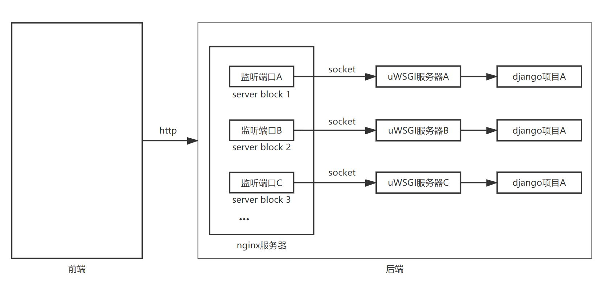

1. nginx+uwsgi+django¶

1.2. uWSGI¶
uWSGI是一个实现了WSGI协议、uwsgi协议、http协议的网关服务器。其会创建Unix套接字，通过uwsgi协议处理从web server传来的客户端的http请求，通过WSGI协议调用执行相应的django应用程序。
WSGI：是一种通信协议，用于接收从web server传来的客户端的http请求，然后调用执行相应的django应用程序。总之，它用于规范web server与web application的通信
uwsgi：是一种线路协议，用于规范uWSGI服务器与其它网络服务器的通信（是uWSGI服务器自有的协议）
从前端到后端：the web client <–http–> the web server <–unix socket–> the uWSGI <—-> Django application
1.3. nginx+uwsgi+django¶
nginx：处理静态文件；提高并发处理量；对多台uWSGI进行负载均衡；提高安全性
uwsgi：web服务器和web程序之间的一种简单通用的接口，用于将HTTP协议转换为Python可以直接使用的WSGI协议。其包含的wsgi协议使得遵从此协议的web程序可以运行在任何web服务器上；uwsgi协议定义了传输信息的类型
- 从客户端发起请求到客户端收到响应的完整流程
浏览器请求
nginx解包分析。如果是静态文件请求就根据nginx配置的静态文件目录返回请求的资源；如果是动态的请求，nginx通过配置文件将请求传递给uWSGI
uWSGI 将接收到的包进行处理，并转发给wsgi
wsgi根据请求调用django的某个view，view处理完后将返回值交给wsgi
wsgi将返回值进行打包，转发给uWSGI，uWSGI接收后转发给nginx，nginx最终将返回值返回给浏览器
注：不同的组件之间传递信息涉及到数据格式和协议的转换
1.3.1. 部署步骤¶
- 安装
nginx：apt-get install nginx
uwsgi：pip install uwsgi
配置
uwsgi：在项目根目录下创建uwsgi/uwsgi.ini文件
# uwsgi.ini [uwsgi] # 项目文件的地址 chdir = /home/huaqiushi/Desktop/UniversalPlugin # 要使用的wsgi模块 module = UniversalPlugin.wsgi:application # 开启的进程（也称为worker）数量 processes = 4 # 开启的线程数量 threads = 2 # 开启主进程 master = True # 8000端口接收来自nginx的socket请求（此处若将socket改成http则可直接用uwsgi接收来自用户的http请求） socket = 127.0.0.1:8000 # 在指定的地址上开启状态服务 stats = 127.0.0.1:8080 # 使进程在后台运行，并将日志输出到指定的文件 daemonize = /home/huaqiushi/Desktop/UniversalPlugin/uwsgi/uwsgi.log # 将主进程的pid记录到指定的文件中 pidfile = /home/huaqiushi/Desktop/UniversalPlugin/uwsgi/master.pid # 退出时清理环境——删除unix socket文件和pid文件 vacuum = True
nginx：在/etc/nginx/sites-available中添加配置文件，在/etc/nginx/sites-enabled中添加对配置文件的符号链接
反向代理（示例）
server { listen 80; server_name domain2.com www.domain2.com; access_log logs/domain2.access.log main; # serve static files location ~ ^/(images|javascript|js|css|flash|media|static)/ { root /var/www/virtual/big.server.com/htdocs; expires 30d; } # pass requests for dynamic content to rails/turbogears/zope, et al location / { proxy_pass http://127.0.0.1:8080; } }
负载均衡（示例）
upstream big_server_com { server 127.0.0.3:8000 weight=5; server 127.0.0.3:8001 weight=5; server 192.168.0.1:8000; server 192.168.0.1:8001; } server { listen 80; server_name big.server.com; access_log logs/big.server.access.log main; location / { proxy_pass http://big_server_com; } }
完整的配置（经过实践确认）
/etc/nginx/下有四个关于nginx的配置文件：
nginx.conf：nginx的主配置文件（除过sever和upstream的配置；这两者定义在sites-enabled中）
conf.d：没有用到（作用未知）
sites-enabled：对要启用的server的符号链接
sites-available：一系列的server（以备在sites-enabled中启用）
upstream django { server 127.0.0.1:8000; } server { listen 80; server_name dolphin.com; charset utf-8; client_max_body_size 75M; location /static { alias /home/huaqiushi/Desktop/UniversalPlugin/static; } location / { uwsgi_pass django; # django是在upstream中自定义的名称 include uwsgi_params; } }
启动
uwsgi：uwsgi –ini /home/huaqiushi/Desktop/UniversalPlugin/uwsgi/uwsgi.ini
nginx：service nginx start
收集静态文件
在项目的settings文件中添加：STATIC_ROOT = ‘/home/huaqiushi/Desktop/UniversalPlugin/static/’
注：STATIC_ROOT的作用是定义静态文件最终存放的文件夹；当静态文件收集完毕后，其将由nginx中定义的“location /static”去查找
在终端运行：python manage.py collectstatic ——将所有应用的static文件夹中的静态文件拷贝到项目的static文件夹（即STATIC_ROOT）中